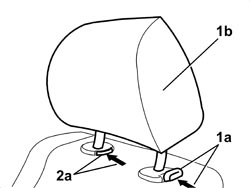

7045B10 FRONT SEAT HEAD RESTRAINT, LEFT OR RIGHT - R.R.
- Path
- Procedures > 70 FITTINGS > 7045 FRONT SEATS > 7045B FRONT SEAT HEAD RESTRAINT/ARMREST > 7045B10 FRONT SEAT HEAD RESTRAINT, LEFT OR RIGHT - R.R.
- Kind
- repair procedure (removal / refitting; the operation number is the code)
- Applies to
- all engines; all production periods
- Interactive page
- https://sloeber94.github.io/elrnDB/#/939011305
Applies to: all engines; all production periods
 Removing
Removing
 Refitting
Refitting1. Press the retainer (1a) and lift up the head restraint (1b) until it is in the end of travel position.
2. Press the retainers (1a) and (2a) simultaneously and extract the head restraint (1b).

Applies to: all engines; all production periods
Refitting
Removing- Check that the head restraint is not damaged.
- Press the retainers and fit the head restraint.
- Check that the head restraint is working.
Topics that link to this page (10)
- 7045A38 DRIVER'S SEAT BACKREST LUMBAR ADJUSTMENT DEVICE - R.R WITH SEAT REMOVED
- 7045A39 DEVICE FOR DRIVER'S SEAT BACKREST LUMBAR ADJUSTMENT - R.R.
- 7045A86 FRONT SEAT FRAME (ONE), LEFT OR RIGHT, R.R.
- 7045B06 GUIDE BUSH FOR FRONT SEAT HEAD RESTRAINT (ONE), LEFT OR RIGHT - R.R.
- 7045D10 TRIM FOR ONE FRONT SEAT LH OR RH - R.R
- 7045D11 TRIM OF ONE FRONT SEAT LH OR RH RR WITH SEAT REMOVED
- 7045D30 FRONT SEAT BACKREST COVER, LEFT OR RIGHT - R.R.
- 7045D31 FRONT SEAT BACKREST COVER, LEFT OR RIGHT - R.R. WITH SEAT REMOVED
- 7045D50 FRONT SEAT HEAD RESTRAINT TRIM, LEFT OR RIGHT - R.R.
- 7045M26 L/H OR R/H FRONT SEAT SQUAB HEAT PAD - R+R FOLLOWING ELECTRICAL WIRING CHECK